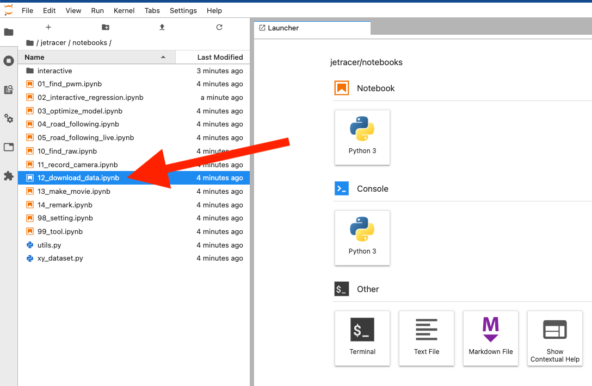
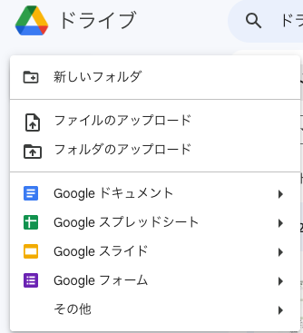
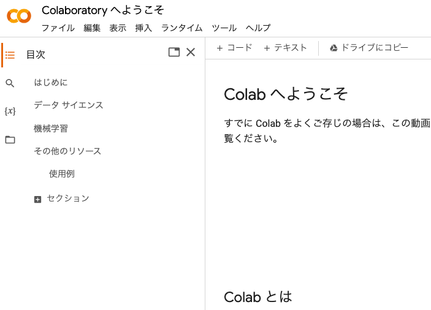
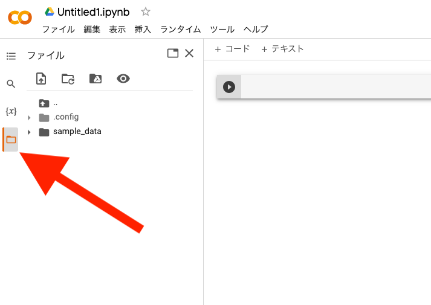
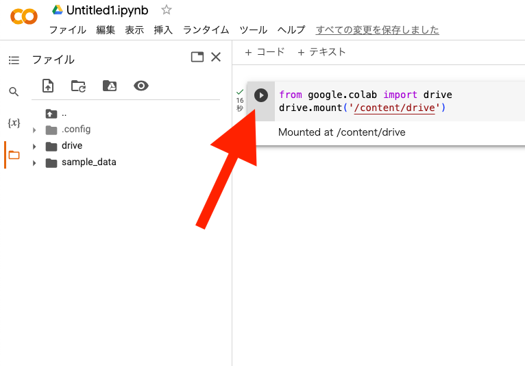
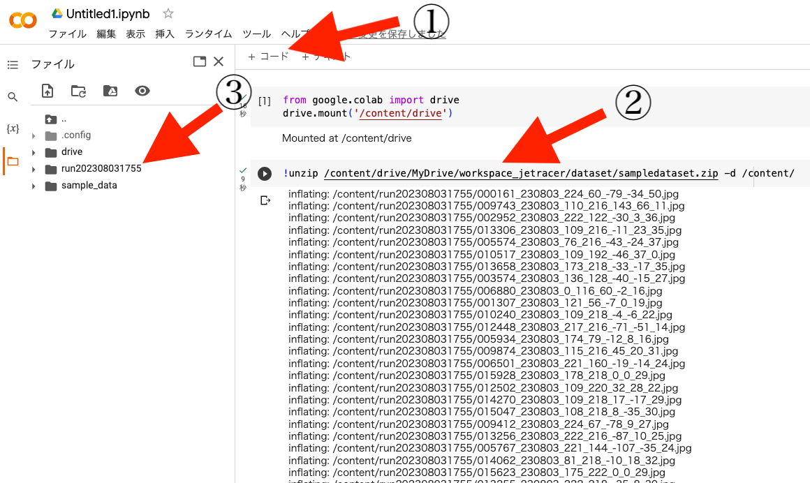
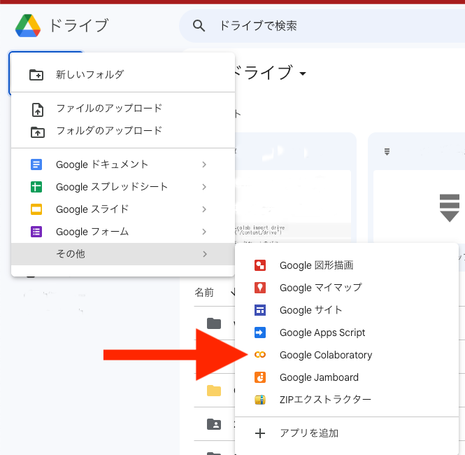
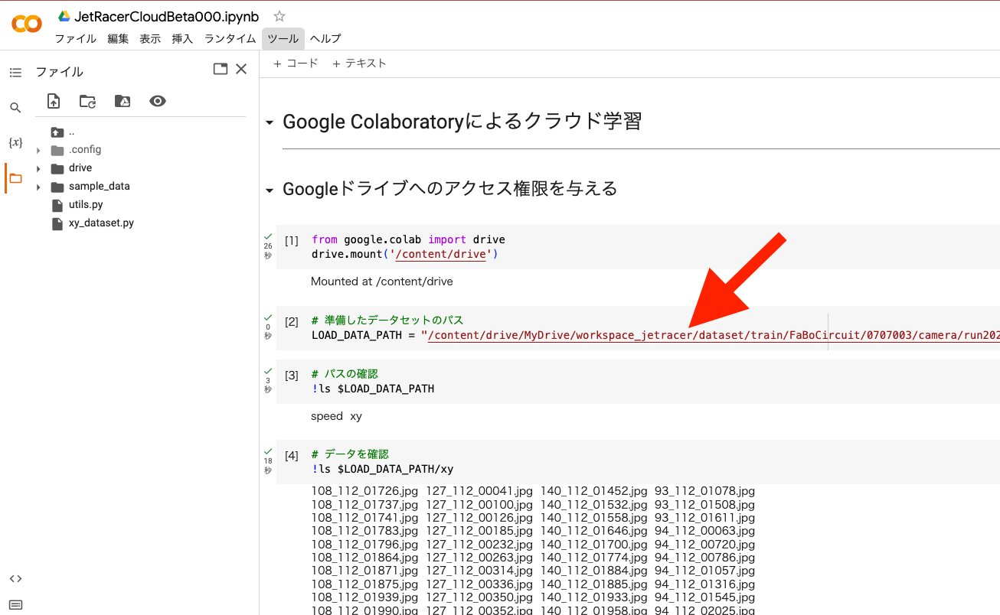
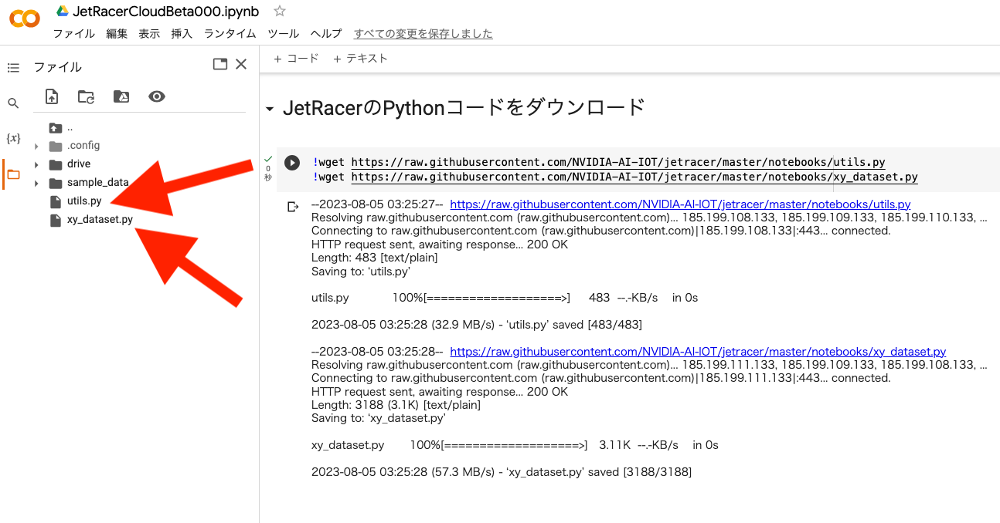

Google Colaboratoryを使ったクラウド学習(alpha版)
Jetson Nanoだけでもエッジでの学習はできますが、インターネット環境があればクラウドでも学習はできます。
Google Colaboratory(Google Colab)を使用することでGPUなどのハードウェアなしで使うことができます。 Jupyter NoteBookは初めから用意されており、学習時間を短縮、画像枚数もより多く扱うことが容易になります。 （※ただし、Goole Colaboratoryを無料でのご使用の場合は、使用するGPUや使用時間の制限を受けます。）
データセットをzipファイルにまとめる
収集したデータセットをクラウドへアップします。JetsonNanoの12_download_data.ipynbを開いて
データセット（画像データ）を一つのzipファイルにしてGoogle Colaboratoryへのファイルアップロードできるようにします。

ディレクトリ（タスク）をドロップダウンリストから選んで、圧縮したいデータセットフォルダを選択します。
ZIPボタンを押すと圧縮が始まり、圧縮が完了するとログに処理終了が表示されZIPフォルダが生成されます。
ZIPフォルダに圧縮されたファイルがあり、このファイルをGoogleドライブにアップロードします。

画像ファイル枚数によって終了時間が異なります。処理完了が出るまで待ちましょう。
Googleのマイドライブへデータセットをアップロードする
作成したzipファイルは、zipフォルダにあります。ダウンロードしたいファイルを右クリックDownloadを選択します。
一旦、お使いのパソコンにダウンロードします。
右クリックでダウンロードします。
Google Colaboratoryを使用する前に、事前にGoogleアカウントが必要です。Googleにログインします。
事前に、Googleドライブ内にJetRacer_WorkSpeaceという名前の専用のフォルダを作りましょう。
zipファイルをGoogleドライブにアップロードします。
新規ボタンをクリックして、作業フォルダ（etRacer_WorkSpeace/dataset/）を作り、そのフォルダ内にzipファイルをアップロードします。

（例）保存先のディレクトリ JetRacer_WorkSpeace/dataset/
Google Colaboratory を使うための準備
Google Colaboratoryにアクセスします。
https://colab.research.google.com/?hl=ja
Google Colaboratoryにようこそ

データセットのファイルのパス
Googleのマイドライブではなく、ファイルGoogle Colaboratoryのディレクトリにアクセスの場合は、
"drive/MyDrive/workspace_jetracer/dataset/......."
モデルの出力先は、modelディレクトリを作成しておきましょう。
"drive/MyDrive/workspace_jetracer/model/......."
ZipファイルをGoogleのマイドライブへアップロードします。
データセットのzip解凍
右クリックしてアプリでもファイル解凍できますが、ファイル数が多くなると時間がかかるのでGoogle Colaboratoryで解凍します。
Googleドライブの新規ボタンを押して、その他を選択、Google Colaboratoryをクリックします。
保存先がGoolgeドライブのマイドライブの場合はGoogle Colaboratoryからアクセス権限を与えます。
下記のマウントするコードを実行するか、フォルダの左側にあるアイコンをクリックします。

グーグルドライブをマウントします。
セル内に以下のコードをコピーアンドペーストして実行します。

1 2 | |
MyDriveでないcontent以下に展開先を指定し、任意のディレクトリに解凍させます。
1 | |

① ＋コードクリック（セルを追加）
② 上記コードをコピーアンドペーストして実行
③ 解凍先を確認
Note
Myドライブ（/content/drive/MyDrive/）の大量の数のファイルは、処理が途中で止まることがありますのでMyDrive以外のディレクトリに展開させます。 ※ここでは/content/の直下に解凍しています。
解凍が終了すると画面一番下のバーに完了時間が表示されます。
Google Colaboratoryによる学習
ファイルをクリックし、ノートブックを開くを選択します。

Zipファイルをドラックアンドドロップかファイル選択してGoogle Colaboratoryへアップロードします。
JetRacerCloudBeta000.ipynbをダウンロードします。
マイドライブにJetRacerCloudBeta000.ipynbをアップロードします。

Googleドライブにあるデータセットのファイルのパスは、例 ： "/content/drive/MyDrive/workspace_jetracer/dataset/{フォルダ名}"
Colaboのドライブにあるデータセットのファイルのパスは、例 ： "/content/{フォルダ名}"
1 | |
ダウンロードしたファイルを上から実行していきます。

JetRacerのコードをダウンロード
1 2 | |

GPUを有効にします。ダイヤログが出ることがありますが利用できるGPUを使用します。
1 | |
lossが低くなるように任意のエポック数に変えて、学習させます。（無料でのご使用の場合は、時間制限があります。ご注意ください。）
学習（エポック）が終了したのなら、出来たモデルを名前のつけてGoogleドライブに保存します。
1 2 | |
出来たモデルの評価を撮影済みの画像を使って評価します。結果が芳しくなかった場合は、データセットを増やしたり、エポック数を増やして再び学習し調整します。
コードのエポック数のデフォルト値は120です。
Warning
Google Colaboratoryでの無料でお使いの場合は、GPUの使用時間制限がございます。時間制限以内に終了できるようにデータセット枚数とエポック数を調整しましょう。
1 2 3 4 5 6 7 8 | |
Note
データセットの枚数が大きいとログが表示されるまで数十分以上時間がかかることがあります。
動画検証によるモデルの評価
評価したいモデルのパスに変更します。
1 | |
評価に使う画像のパスに変更します。
1 | |
動画ファイルが生成され動画が映し出されます。青い丸が推論結果の座標になります。ダウンロード、再生速度が設定出来ます。
保存した学習済みモデルをダウンロードしてそのファイルをJetson Nanoのmodelディレクトリ(/home/jetson/jetracer/notebooks/model)へアップロードします。
Jetson NanoのJupyter labのアップロードボタンをクリックして、モデルpthファイルをアップロードし03_optimize_model.ipynbにてTensorRTにてモデルの最適化し、 04_road_following.ipynbにて自動走行します。